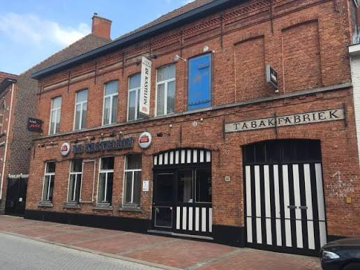

Een nieuwe voordeur. Hetzelfde feestbeest.
Dertig.
Doe maar
alsof het
niet zo is.
Ali wordt 30. De haren zijn al vertrokken,
nu de twintigerjaren nog.
ALI. LIMITED EDITION. SINDS 30 JAAR.
30 jaar
jong genoeg.
jong genoeg.
De belangrijkste vraag
Ben je
erbij?
Met jou is het feest compleet.
Laat even weten of je komt.
Je naam en antwoord staan hieronder voor iedereen met de link. Je kunt je antwoord op dit toestel later aanpassen.
De gastenlijst
Goed gezelschap.
—personen aanwezig
—aanmeldingen met ja
—afmeldingen
De gastenlijst wordt opgehaald…
| Naam | Komt erbij? | Personen |
|---|
De lijst wordt automatisch elke 20 seconden bijgewerkt.

Hier moet je zijn